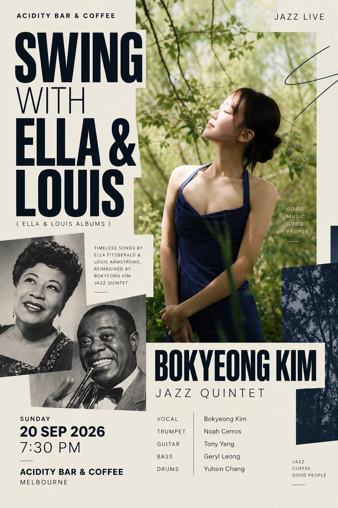

Live at Acidity
The Music of Ella & Louis
Ella Fitzgerald’s elegance meets Louis Armstrong’s warmth in a programme shaped by swing, improvisation and musical chemistry. Bokyeong Kim and her quintet revisit the Ella & Louis songbook with a fresh voice while staying close to the warmth and spontaneity of the originals.
- Date
- Sunday, 20 September 2026
- Time
- 7:30PM–9:30PM
- Artist
- Bokyeong Kim Quintet
- Line-up
- Bokyeong Kim — Vocal
Noah Cerros — Trumpet
Tony Yang — Guitar
Geryl Leong — Bass
Yuhsin Chang — Drums - Tickets
- Early Bird $15 · General $20
- Limited offer
- $25 (was $35) · Entry + one selected drink: schooner of beer, house wine or house spirit.